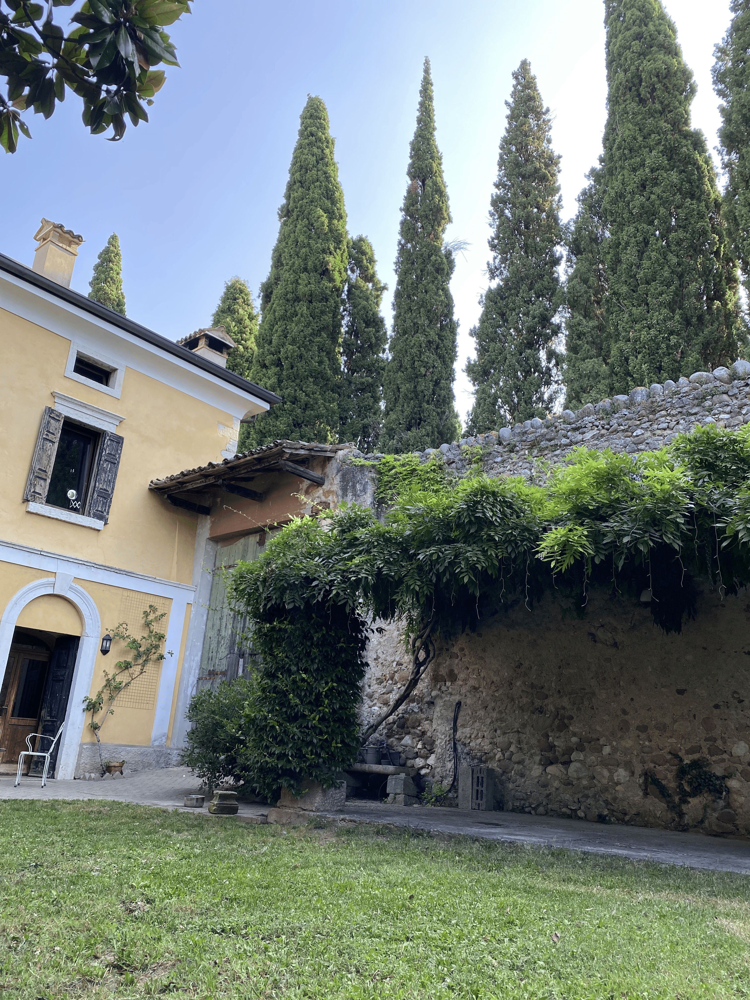
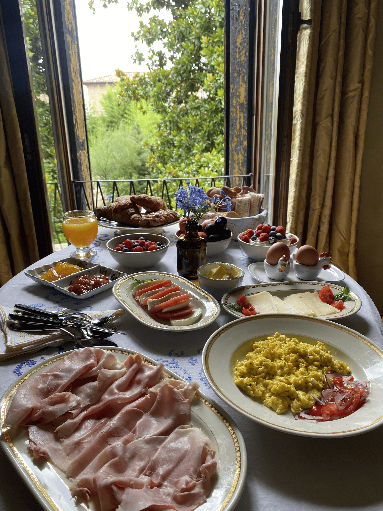
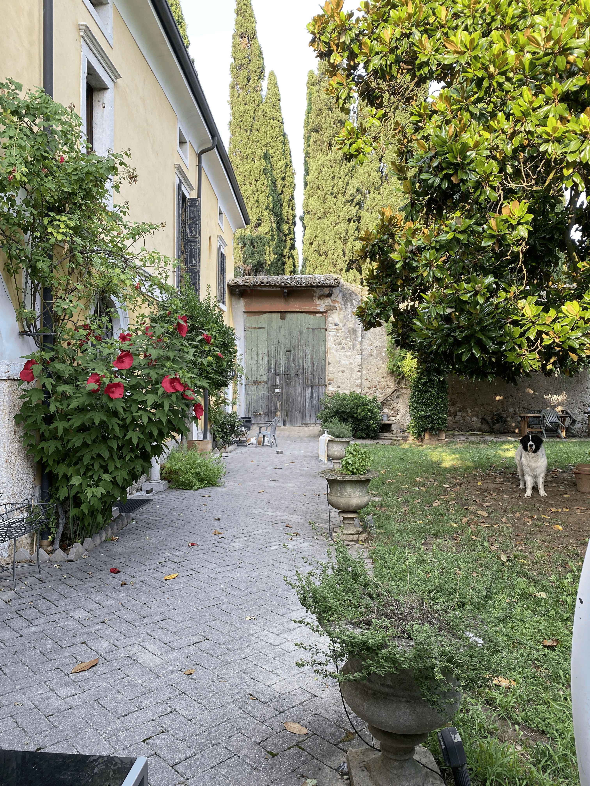
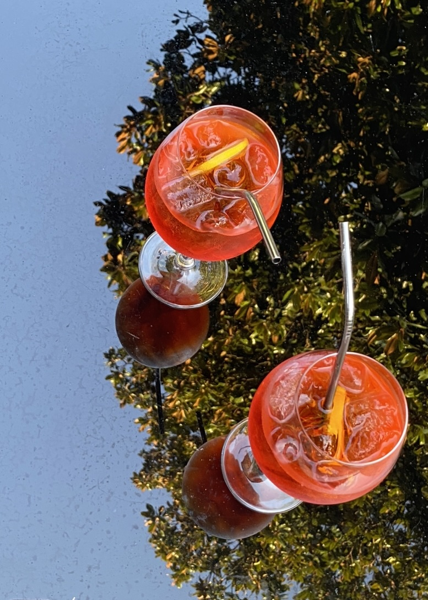

_________________________________
gap
Corte Pozzol is located in the small town of Rivoli Veronese. The town is nestled in the hills, overlooking the River Adige. It has a lovely small town charm that you will have the chance to explore during your stay.
_________________________________
Our 400 year old villa has been renovated to a high standard over the past 20 years. We have a garden and patio area for you to dine and relax in, and breakfast is freshly made every morning.



9km to the west of Corte Pozzol is the picturesque Lake Garda, surrounded by beautiful towns and soaring mountains. To the east is the romantic city of Verona where history, art, food and Shakespeare lovers will find themselves enamoured with the city's offerings.
gap
Corte Pozzol is conveniently located next to the motorway and so it is best reached by car. At Affi, follow the SP29 northbound for 1.9km and turn right onto the SP29c. After 1.8km turn right up our driveway.
Corte pozzol is full of charm and we miss waking up to beautiful views of the Italian countryside
Pictures don't do this place justice - truly a slice of heaven in the countryside of Veneto
We had the most relaxing experience. It was a beautiful place to relax after exploring Verona and Lake Garda